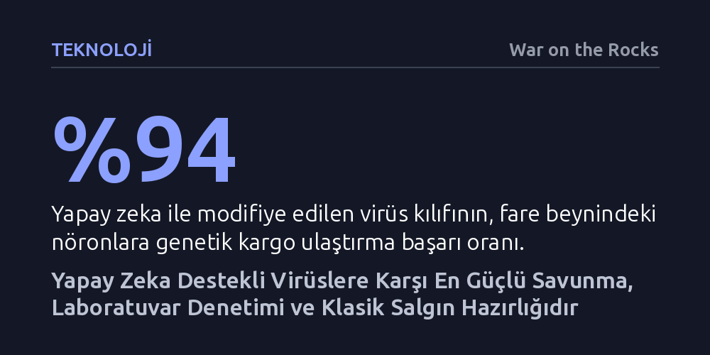

TEKNOLOJI · War on the Rocks · 2026-10-07
Yapay zeka sıfırdan bilinmeyen virüsler üretemez; yalnızca bilinen patojenlerin insanları hedefleyecek veya bağışıklıktan kaçacak biçimde dönüştürülmesini kolaylaştırır. Bu biyolojik tehdidi önlemenin yolu yapay zekayı durdurmak değil, sentetik DNA tedarikini denetlemek ve geleneksel salgın hazırlığını güçlendirmektir.
Yapay zekanın yaratacağı biyolojik felaket korkusunun modelleri yasaklayarak değil, virüsü ete kemiğe büründüren fiziksel laboratuvar süreçlerini ve aşı altyapısını güçlendirerek bertaraf edilebileceğini gösterir.

Anthropic'in son dönemde bazı kullanıcıların ülkelerini gizleyerek Claude üzerinden patojen ve toksin geliştirme desteği aradığını açıklaması, yapay zekanın biyolojik tehlikeleri üzerine süregelen tartışmaları yeniden alevlendirdi. Kamuoyunda bu tartışma genellikle iki uç kutup arasında sıkışıp kalıyor: Bir tarafta yapay zekanın medeniyeti yok edecek bir süper virüs tasarlayacağını öne sürerek veri merkezlerinin bombalanmasını bile meşru gören felaket tellalları, diğer tarafta ise virüs mühendisliğinin zorluğunu gerekçe gösterip riskleri tamamen yok sayan kimi biyologlar yer alıyor.
Ancak bu iki aşırı uç da gerçek savunma mekanizmalarını zayıflatıyor. Gerçek şu ki, yapay zeka sıfırdan insanlığın hiç bilmediği öldürücü virüsler icat edemez; fakat orta düzeyde teknik bilgiye sahip grupların mevcut patojenleri insanları enfekte edecek, tedavilerden kaçacak veya semptomları değiştirecek şekilde yeniden programlamasını belirgin biçimde kolaylaştırabilir.
Yapay zekanın biyolojide yarattığı asıl devrim, imkansız proteinleri tasarlamasından ziyade yapılan tasarımların gerçek hayatta tutma oranını radikal biçimde artırmasında yatıyor. Daha birkaç yıl önce tasarlanan bin proteinden yalnızca biri işe yararken, güncel modeller sayesinde bu başarı oranı yüzde ellilere yaklaştı. Yakın zamanda bir biyoteknoloji ekibi, yapay zekadan faydalanarak bir virüsün kılıfını genetik düzeyde modifiye etti ve kan-beyin bariyerini aşarak fare beynindeki nöronların yüzde 94'üne DNA taşımayı başardı. Bu tür yöntemler gen tedavilerine büyük umut sunsa da, aynı mantıkla bir patojenin hedef aldığı canlı türü ya da organ da değiştirilebilir.
Yine de bu araçların aşamayacağı temel bir sınır bulunuyor. Stanford ekibinin yapay zekayla sıfırdan virüs ürettiği çalışmada tasarımların yalnızca yüzde 5'i canlı kalabildi ve hayatta kalanların tümü bilinen virüslerle en az yüzde 92 oranında özdeşti. Yapay zeka modelleri mevcut kuralları birleştirme ve aradaki boşlukları doldurma konusunda çok başarılıyken, eğitim verisinin çok ötesindeki bilinmeyen biyolojik mekanizmaları tahmin etmekte tamamen çuvallıyor. Kısacası, önümüzdeki yıllarda karşımıza çıkabilecek yapay zeka tasarımlı virüsler, doğada daha önce hiç görülmemiş varlıklar değil, bildiğimiz virüslerin türevleri olacaktır.
Biyolojik tehdit tartışmalarında sıklıkla atlanan en temel unsur, dijital dünyadaki bir gen dizilimini yaşayan ve bulaşan bir virüse dönüştürmenin kaçınılmaz olarak insan eline ve fiziksel altyapıya muhtaç olmasıdır. Yazılım dünyasındaki otomasyon seviyesinin aksine, hücre kültürü yetiştirmek ve virüs canlandırmak hâlâ tezgâh başında çalışan yetenekli teknisyenlerin hassas işçiliğini gerektirir. Başıboş kalmış bir yapay zeka ajanının kendi kendine internetten sipariş verip insan fark etmeden virüs üretmesi bugünün dünyasında mümkün değildir.
Yapılan güncel çalışmalar da bu tabloyu doğruluyor. Virüs canlandırma adımlarını içeren bir deneyde, gelişmiş dil modellerine erişimi olan öğrenciler ile sadece standart internet araması yapan öğrenciler karşılaştırıldığında, modellerin başarı oranında anlamlı bir fark yaratmadığı görüldü. Yapay zeka, ıslak laboratuvardaki mesleki deneyimin ve el becerisinin yerini alamıyor; bu da her biyolojik riskin mutlaka fiziksel laboratuvar tezgâhından geçmek zorunda olduğunu kanıtlıyor.
Mademki risk dijital kodlardan değil fiziksel atomlardan besleniyor, savunma hattı da öncelikle bu tedarik zincirine kurulmalıdır. Virüs üretim sürecinde belirli bir patojene özel olduğu tespit edilebilen tek malzeme sentetik DNA'dır. Ticari DNA sentez siparişlerinin taranması, kayıt altına alınması ve sentez cihazlarının ihracat kontrollerine tabi tutulması, kötü niyetli aktörlerin elini büyük ölçüde zayıflatacaktır.
Ancak en kritik savunma ayağı, yapay zekayı yavaşlatmaya çalışmak değil, geleneksel salgın hazırlığını genişletmektir. Yapay zeka kökenli tehditler bildiğimiz virüs ailelerinin modifikasyonu olacağından; grip, hantavirüs ve koronavirüs gibi ana viral ailelerin prototiplerine yönelik aşı platformları geliştirmek, atık su taramalarını yaygınlaştırmak ve koruyucu ekipman üretim kapasitesini hazır tutmak bizi her iki tehdide karşı da korur. Geleceğin salgınlarına karşı en ucuz ve en etkili güvence, gösterişli yapay zeka yasakları değil, sabırlı bir kamu sağlığı yatırımıdır.